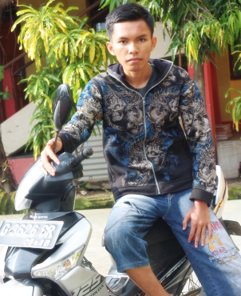

| NO | KODE MK | NAMA MATA KULIAH | SKS |
|---|---|---|---|
| 1. | TI101 | Bahasa Inggris I | 2 |
| 2. | TI102 | Kalkulus | 2 |
| 3. | TI103 | Pendidikan Agama | 2 |
| 4. | TI104 | Pengantar Teknologi Informasi | 2 |
| 5. | TI105 | Algoritma dan Pemrograman I | 3 |
| 6. | TI106 | Perangkat Keras Komputer | 3 |
| 7. | TI107 | Aplikasi Perkantoran | 3 |
| 8. | TI108 | Elektronika Analog | 3 |
| Jumlah SKS | 20 |
| NO | KODE MK | NAMA MATA KULIAH | SKS |
|---|---|---|---|
| 1. | TI201 | Bahasa Inggris II | 2 |
| 2. | TI202 | Kewarganegaraan | 2 |
| 3. | TI203 | Aljabar linear dan Matrik | 2 |
| 4. | TI204 | Struktur Data | 3 |
| 5. | TI205 | Algoritma dan Pemrograman II | 3 |
| 6. | TI206 | Analisa dan Perancangan Sistem | 2 |
| 7. | TI207 | Sistem Digital | 3 |
| 8. | TI208 | Sistem Operasi | 3 |
| Jumlah SKS | 20 |
| NO | KODE MK | NAMA MATA KULIAH | SKS |
|---|---|---|---|
| 1. | TI301 | Bahasa Inggris III | 2 |
| 2. | TI302 | Matematika Diskrit | 2 |
| 3. | TI303 | Object Oriented Design | 2 |
| 4. | TI304 | Desain Grafis dan Multimedia | 3 |
| 5. | TI305 | Sistem Operasi II | 2 |
| 6. | TI306 | Jaringan Komputer I | 3 |
| 7. | TI307 | Pemrograman Client Server | 3 |
| 8. | TI308 | Pemrograman Komputer | 3 |
| 9. | TI309 | Sistem Basis Data I | 3 |
| Jumlah SKS | 23 |
| NO | KODE MK | NAMA MATA KULIAH | SKS |
|---|---|---|---|
| 1. | TI401 | Interaksi Manusia dan Komputer | 2 |
| 2. | TI402 | Komputasi Numerik | 2 |
| 3. | TI403 | Object Oriented Programming I | 3 |
| 4. | TI404 | Web Programming | 3 |
| 5. | TI405 | Jaringan Komputer II | 3 |
| 6. | TI406 | Pemrograman Client Server II | 3 |
| 7. | TI407 | Pemrograman Komputer II | 3 |
| 8. | TI408 | Sistem Basis Data II | 3 |
| Jumlah SKS | 22 |